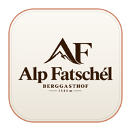

100 % Antivirus- & SmartScreen-sicher · Inklusive Feratel Deskline Schnittstelle & 3-Rollen-Login
Enthält das eigenständige Windows-Programmfenster, den automatischen Desktop-Icon-Einrichter (mit Original Alp-Fatschél-Icon) und den Feratel-Deskline-Starter ohne fremde System-Hooks.
Windows-Paket herunterladen (.ZIP)Öffnet den Belegungsplan sofort im Browser auf deinem Büro-PC. In Microsoft Edge oder Chrome kannst du oben rechts in der Adressleiste direkt auf „App installieren“ klicken.
App jetzt direkt im Browser öffnen ›Alp-Fatschel-Windows-PC.zip und wähle „Alle extrahieren…“.2-Desktop-Icon-Erstellen.cmd — das Programm legt sofort das Alp Fatschél Icon auf deinen Windows-Desktop und startet die App im eigenen Fenster!